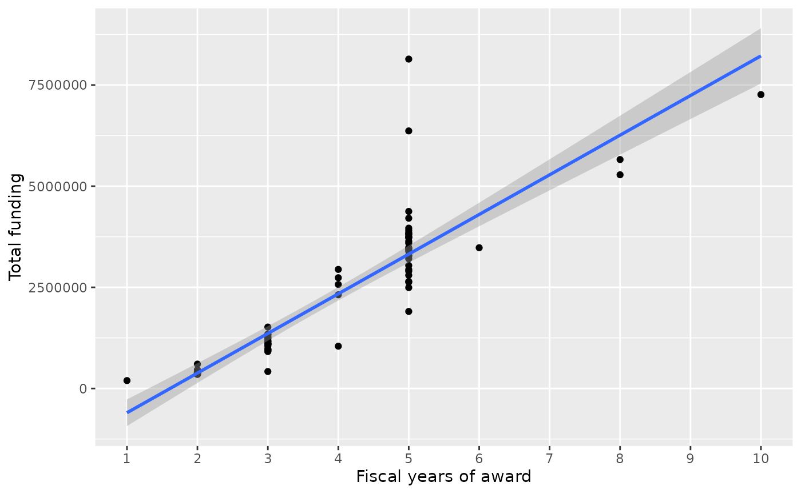
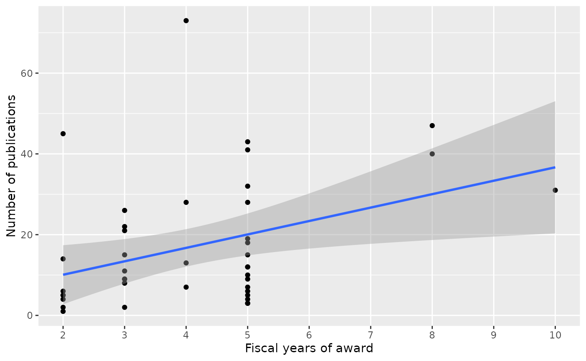
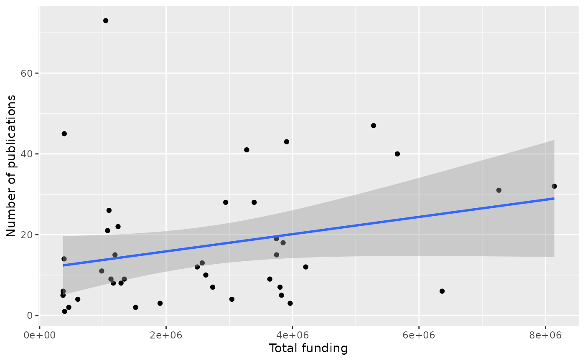
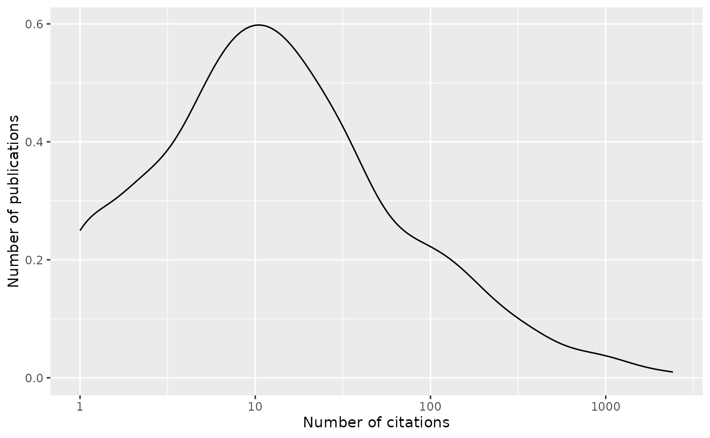

Case study: ITCR
case_study_itcr.RmdThe ‘grantpubcite’ package can be used to query the NIH Reporter database for funded grants and, optionally, publications associated with grants in NIH Reporter. The citation history of publications can discovered using iCite. The ‘grantpubcite’ package help pages and resources make extensive use of ‘tidyverse’ concepts.
See the “Introduction to ‘grantpubcite’” article for installation and basic use.
Core tidyverse functions used in this article include:
-
tibble()– representation of adata.frame, with better display of long and wide data frames.tribble()constructs a tibble in a way that makes the relationship between data across rows more transparent. -
glimpse()– providing a quick look into the columns and data in the tibble by transposing the tibble and display each ‘column’ on a single line. -
select()– column selection. -
filter(),slice()– row selection. -
pull()– extract a single column as a vector. -
mutate()– column transformation. -
count()– count occurences in one or more columns. -
arrange()– order rows by values in one or more columns. -
distinct()– reduce a tibble to only unique rows. -
group_by()– perform computations on groups defined by one or several columns. -
summarize()– calculate summary statstics for groups. -
left_join(),right_join()– merge two tibbles based on shared columns, preserving all rows in the first (left_join()) or second (right_join()) tibble.
Load the library and other packages to be used in this article.
As a case study, suppose we are interested in grants funded under the Information Technology in Cancer Research (ITCR) program.
Project information
The relevant funding opportunity announcements (FOA) are summarized
in a tibble (the ‘tidy’ version of
data.frame)
foas <- tribble(
~full_foa, ~reissue_of, ~foa_tag, ~description,
## current FOAs
"PAR-15-331", "PAR-13-294", "Advanced", "Advanced Development of Informatics Technologies for Cancer Research and Management (U24)",
"PAR-15-332", "PAR-12-288", "Early-Stage", "Early-Stage Development of Informatics Technologies for Cancer Research and Management (U01)",
"PAR-15-333", NA, "Sustained", "Sustained Support for Informatics Resources for Cancer Research and Management (U24)",
"PAR-15-334", NA, "Innovative", "Development of Innovative Informatics Methods and Algorithms for Cancer Research and Management (R21)",
## earlier FOAs
"PAR-13-294", "PAR-12-287", "Advanced", "Advanced Development of Informatics Technology (U24)",
"PAR-12-287", NA, "Advanced", "Advanced Development of Informatics Technology (U24)",
"PAR-12-288", NA, "Early-Stage", "Early-Stage Development of Informatics Technology (U01)"
## FIXME: add 'Revsion of...' FOAs
)
foas <- select(foas, -reissue_of) # drop 'reissue_of' for clarityThe NIH Reporter contains quite a bit of information about each
grant. Get a sense of this by using reporter_projects() to
query for all fields of a single record; most fields included in the
result can also be used for queries.
reporter_projects(foa = pull(foas, "full_foa"), limit = 1) |>
glimpse()
#> Rows: 1
#> Columns: 44
#> $ appl_id <int> 9676260
#> $ subproject_id <lgl> NA
#> $ fiscal_year <int> 2019
#> $ project_num <chr> "5U24CA220242-02"
#> $ project_serial_num <chr> "CA220242"
#> $ organization <df[,17]> <data.frame[1 x 17]>
#> $ award_type <chr> "5"
#> $ activity_code <chr> "U24"
#> $ award_amount <int> 550158
#> $ is_active <lgl> FALSE
#> $ project_num_split <df[,7]> <data.frame[1 x 7]>
#> $ principal_investigators <list> [<data.frame[1 x 8]>]
#> $ contact_pi_name <chr> "ABYZOV, ALEXEJ "
#> $ program_officers <list> [<data.frame[1 x 5]>]
#> $ agency_ic_admin <df[,3]> <data.frame[1 x 3]>
#> $ agency_ic_fundings <list> [<data.frame[1 x 5]>]
#> $ cong_dist <chr> "MN-01"
#> $ spending_categories <list> <108, 132, 1393, 276, 320, 3070, 3724>
#> $ project_start_date <chr> "2018-05-01T12:05:00Z"
#> $ project_end_date <chr> "2023-04-30T12:04:00Z"
#> $ organization_type <df[,3]> <data.frame[1 x 3]>
#> $ full_foa <chr> "PAR-15-331"
#> $ full_study_section <df[,11]> <data.frame[1 x 11]>
#> $ award_notice_date <chr> "2019-05-01T12:05:00Z"
#> $ is_new <lgl> FALSE
#> $ mechanism_code_dc <chr> "OR"
#> $ core_project_num <chr> "U24CA220242"
#> $ terms <chr> "<Aftercare><post treatment><After-Treatment>…
#> $ pref_terms <chr> "Address;Aftercare;Area;Attention;Basic Scien…
#> $ abstract_text <chr> "Project Summary/Abstract\n Progress in techn…
#> $ project_title <chr> "Detection of somatic, subclonal and mosaic C…
#> $ phr_text <chr> "Narrative\nThe analytical tools that will be…
#> $ spending_categories_desc <chr> "Biotechnology; Cancer; Cancer Genomics; …
#> $ agency_code <chr> "NIH"
#> $ covid_response <lgl> NA
#> $ arra_funded <chr> "N"
#> $ budget_start <chr> "2019-05-01T12:05:00Z"
#> $ budget_end <chr> "2020-04-30T12:04:00Z"
#> $ cfda_code <chr> "399"
#> $ funding_mechanism <chr> "Other Research-Related"
#> $ direct_cost_amt <int> 348999
#> $ indirect_cost_amt <int> 201159
#> $ project_detail_url <lgl> NA
#> $ date_added <chr> "2019-05-04T07:05:16Z"For our purpose we restrict fields to a few of particular interest; a fuller description of fields available as criteria for querying and inclusion in the response are available in the technical description of the NIH Reporter project search API.
include_fields <- c(
"full_foa",
"core_project_num",
"fiscal_year",
"award_amount",
"contact_pi_name",
"project_title"
)Retrieve these fields for all projects in NIH reporter associated with the funding announcements of interest. Perform some minor data cleaning by removing leading and trailing whitespace from contact PI names
projects <-
reporter_projects(
foa = foas$full_foa,
include_fields = include_fields
) |>
mutate(contact_pi_name = trimws(contact_pi_name))The result is a tidyverse tibble, and we use ‘tidy’
semantics to explore the data. For instance, although there are 341
returned by NIH Reporter, each project is associated with funding over
multiple fiscal years and perhaps mechanisms (e.g., through
administrative supplements).
The number of projects funded by each FOA is
projects |>
left_join(foas) |>
distinct(foa_tag, core_project_num) |>
count(foa_tag)
#> Joining with `by = join_by(full_foa)`
#> # A tibble: 4 × 2
#> foa_tag n
#> <chr> <int>
#> 1 Advanced 32
#> 2 Early-Stage 29
#> 3 Innovative 21
#> 4 Sustained 5The number of projects funded per fiscal year is
projects |>
distinct(full_foa, core_project_num, fiscal_year) |>
count(fiscal_year)
#> # A tibble: 11 × 2
#> fiscal_year n
#> <int> <int>
#> 1 2013 7
#> 2 2014 17
#> 3 2015 27
#> 4 2016 38
#> 5 2017 45
#> 6 2018 51
#> 7 2019 63
#> 8 2020 42
#> 9 2021 22
#> 10 2022 10
#> 11 2023 1A few projects changed names within the same award; for convenience we create a table of most-recent project titles
project_titles_h <-
projects |>
select(fiscal_year, core_project_num, project_title) |>
arrange(desc(fiscal_year)) |>
filter(!duplicated(core_project_num)) |>
select(core_project_num, project_title)The 87 projects funded by ITCR are
datatable(project_titles_h)We update projects to use harmonized project titles.
projects <-
projects |>
select(-project_title) |>
left_join(project_titles_h, by = "core_project_num")Three project numbers have been funded under more than one FOA.
projects |>
distinct(full_foa, core_project_num) |>
count(core_project_num, sort = TRUE) |>
filter(n > 1L) |>
left_join(project_titles_h)
#> Joining with `by = join_by(core_project_num)`
#> # A tibble: 3 × 3
#> core_project_num n project_title
#> <chr> <int> <chr>
#> 1 U24CA180922 2 Trinity: Transcriptome assembly for genetic and functi…
#> 2 U24CA180996 2 Cancer Genomics: Integrative and Scalable Solutions in…
#> 3 U24CA184427 2 NDEx - the Network Data Exchange A Network Commons for…The following summarizes project funding across years; there are likely many caveats to this.
project_summaries <-
projects |>
group_by(core_project_num) |>
summarize(
n_years = length(unique(fiscal_year)),
amount = sum(award_amount)
) |>
left_join(project_titles_h, by = "core_project_num") |>
arrange(desc(n_years))
project_summaries |>
ggplot(aes(n_years, amount)) +
geom_point() + geom_smooth(method = "lm") +
scale_x_continuous(breaks = seq(1, 10), minor_breaks = NULL) +
labs(x = "Fiscal years of award", y = "Total funding")
#> `geom_smooth()` using formula = 'y ~ x'
datatable(project_summaries)Maturing projects?
A unique aspect of the ITCR FOA structure is that it envisions
projects starting at one FOA and ‘maturing’ to the next FOA, e.g., an
Early-Stage U01 matures to an Advanced U24. It
is not possible to assess this by tracking a project number through full
FOA, because the project number changes with FOA. Are there projects
with the same contact PI that have received awards from different FOA
tags?
tagged_pis <-
projects |>
distinct(full_foa, core_project_num, contact_pi_name) |>
left_join(foas, by = "full_foa") |>
select(foa_tag, contact_pi_name) |>
distinct()
maturing_pis <-
tagged_pis |>
count(contact_pi_name, sort = TRUE) |>
filter(n > 1L) |>
select(-n) |>
left_join(
projects |>
distinct(full_foa, core_project_num, contact_pi_name, project_title),
multiple = "all"
) |>
left_join(foas, by = "full_foa") |>
select(contact_pi_name, project_title, foa_tag) |>
arrange(contact_pi_name, project_title, foa_tag)
#> Joining with `by = join_by(contact_pi_name)`
DT::datatable(maturing_pis)Direct inspection suggests that three contact PIs (Giffith, Karchin, Liu) have each seen one project mature. All are from ‘Early-stage’ to ‘Advanced’.
Publications
Grantees report publications associated with their grants, and this information can be retrieved from NIH reporter. Queries are formulated in a way similar to projects, as described on the NIH Reporter publication search API, a rich set of query criteria can be used, but fields included in the return are strictly limited.
Projects funded in 2020 are
projects_2020 <-
projects |>
filter(fiscal_year == "2020") |>
left_join(project_summaries) |>
distinct(
full_foa, core_project_num,
n_years, amount, project_title
)
#> Joining with `by = join_by(core_project_num, project_title)`There are 42 projects receiving funds in fiscal year 2020. Publications associated with these projects are obtained with
publications <- reporter_publications(
core_project_nums = pull(projects_2020, "core_project_num")
) |>
select(-applid) # we won't use 'applid'There are 704 distinct publications (not all published in 2020).
Project publication and funding
The most prolific projects are
publications_by_project <-
publications |>
count(coreproject, sort = TRUE) |>
left_join(
projects_2020,
by = c(coreproject = "core_project_num"),
multiple = "last"
)
datatable(publications_by_project)An exceptional number of publications are reported by project number ‘U01CA239055’. The relationship between publication and funding period and amount are visualized as follows.
publications_by_project |>
ggplot(aes(n_years, n)) +
geom_point() + geom_smooth(method = "lm") +
scale_x_continuous(breaks = seq(1, 10), minor_breaks = NULL) +
labs(x = "Fiscal years of award", y = "Number of publications")
#> `geom_smooth()` using formula = 'y ~ x'
publications_by_project |>
ggplot(aes(amount, n)) +
geom_point() + geom_smooth(method = "lm") +
labs(x = "Total funding", y = "Number of publications")
#> `geom_smooth()` using formula = 'y ~ x'
ITCR collaboration
ITCR emphasizes collaboration between funded projects. Are there
examples of collaboration at the level of publication, i.e.,
pmid associated with more than one project number?
collaborative_pmid <-
publications |>
count(pmid, sort = TRUE, name = "n_collab") |>
filter(n_collab > 1)
collaborative_pmid
#> # A tibble: 14 × 2
#> pmid n_collab
#> <int> <int>
#> 1 35072136 3
#> 2 29533785 2
#> 3 30930166 2
#> 4 31238109 2
#> 5 32383980 2
#> 6 33067482 2
#> 7 33119407 2
#> 8 33237278 2
#> 9 33574288 2
#> 10 33720842 2
#> 11 34514469 2
#> 12 35311178 2
#> 13 35759080 2
#> 14 35760813 2Which projects are collaborating through shared publication?
collaborative_pmid |>
left_join(publications, multiple = "all") |>
count(coreproject, sort = TRUE, name = "n_collab") |>
left_join(project_summaries, by = c(coreproject = "core_project_num")) |>
select(core_project_num = coreproject, n_collab, project_title) |>
distinct() |>
filter(n_collab > 1) |>
datatable()
#> Joining with `by = join_by(pmid)`Citations
Query iCite for all citations to the publications associated with ITCR projects funded in 2020, restricting output to include fields of interest.
include_fields <- c(
"pmid", "year", "citation_count", "relative_citation_ratio",
"year", "title", "authors", "journal", "doi"
)
citations <- icite(publications, include_fields)
citations <- left_join(publications, citations)
#> Joining with `by = join_by(pmid)`The 719 publications have 36233 total citations; 98 publications have not been cited; not surprisingly uncited publications are recent.
citations |>
group_by(year) |>
summarize(
n_projects = length(unique(coreproject)),
n_pub = n(),
n_uncite = sum(citation_count == 0L),
citn_count = sum(citation_count)
) |>
DT::datatable()Citations follow a very familiar pattern, with a few publications cited frequently.
citations |>
filter(citation_count > 0) |>
ggplot(aes(x = citation_count)) +
scale_x_log10() +
geom_density() +
xlab("Number of citations") + ylab("Number of publications")
Highly cited publications are in high-impact journals, and emphasize science-related results rather than a software tool per se – the tool has been used in an important study, and the authors of the study have acknowledged the tool.
citations |>
arrange(desc(citation_count)) |>
select(coreproject, pmid, year, citation_count, journal, title) |>
datatable()Citations per project are summarized below.
citations |>
group_by(coreproject) |>
summarize(
n_pub = n(),
n_uncite = sum(citation_count == 0L),
citn_count = sum(citation_count)
) |>
arrange(desc(citn_count)) |>
left_join(project_summaries, by = c(coreproject = "core_project_num")) |>
datatable()ITCR collaborations
An opportunity for (indirect) collaboration occurs when one project cites the work of another project. Thus we query iCite for the publications that cited ITCR publications, and exclude publications that are not themselves ITCR publications.
include_fields <- c("pmid", "cited_by")
cited_by <- icite(publications, include_fields)
## 'cited_by' is a space-delimited character vector of pmid ids; expand these...
cited_by_pmids <-
pull(cited_by, "cited_by") |>
lapply(strsplit, "[[:blank:]]") |>
unlist(recursive = FALSE)
## ...construct a tibble of pmid / cited_by pmid
pmid_cited_by_itcr <-
tibble(
pmid = rep(pull(cited_by, "pmid"), lengths(cited_by_pmids)),
cited_by = unlist(cited_by_pmids) |> as.integer()
) |>
## and exclude citations by non-ITCR publications
filter(cited_by %in% pmid)There are 840 citations of ITCR publications by ITCR projects.
core_project_citations <-
pmid_cited_by_itcr |>
## map pmid to coreproject
left_join(publications, multiple = "all") |>
rename(core_project_num = coreproject) |>
## map cited_by to coreproject
left_join(
publications,
by = c(cited_by = "pmid"),
multiple = "all"
) |>
rename(cited_by_core_project = coreproject)
#> Joining with `by = join_by(pmid)`The following summarizes citations at the project level
project_project_citations <-
core_project_citations |>
count(core_project_num, cited_by = cited_by_core_project, name = "n_citns")Self-citations are
project_project_citations |>
filter(core_project_num == cited_by) |>
arrange(desc(n_citns)) |>
left_join(project_summaries) |>
select(-cited_by) |>
rename(self_citn = "n_citns") |>
datatable()
#> Joining with `by = join_by(core_project_num)`One can view collaboration as the number of projects that cite a particular project…
project_project_citations |>
filter(core_project_num != cited_by) |>
group_by(core_project_num) |>
summarize(n_collaborators = length(unique(cited_by))) |>
arrange(desc(n_collaborators)) |>
left_join(project_titles_h) |>
datatable()
#> Joining with `by = join_by(core_project_num)`…or the number of projects a project cites
Session information
sessionInfo()
#> R version 4.2.2 (2022-10-31)
#> Platform: x86_64-pc-linux-gnu (64-bit)
#> Running under: Ubuntu 22.04.2 LTS
#>
#> Matrix products: default
#> BLAS: /usr/lib/x86_64-linux-gnu/openblas-pthread/libblas.so.3
#> LAPACK: /usr/lib/x86_64-linux-gnu/openblas-pthread/libopenblasp-r0.3.20.so
#>
#> locale:
#> [1] LC_CTYPE=C.UTF-8 LC_NUMERIC=C LC_TIME=C.UTF-8
#> [4] LC_COLLATE=C.UTF-8 LC_MONETARY=C.UTF-8 LC_MESSAGES=C.UTF-8
#> [7] LC_PAPER=C.UTF-8 LC_NAME=C LC_ADDRESS=C
#> [10] LC_TELEPHONE=C LC_MEASUREMENT=C.UTF-8 LC_IDENTIFICATION=C
#>
#> attached base packages:
#> [1] stats graphics grDevices utils datasets methods base
#>
#> other attached packages:
#> [1] DT_0.27 ggplot2_3.4.1 grantpubcite_0.0.0.9002
#> [4] dplyr_1.1.0
#>
#> loaded via a namespace (and not attached):
#> [1] lattice_0.20-45 rprojroot_2.0.3 digest_0.6.31 utf8_1.2.3
#> [5] R6_2.5.1 evaluate_0.20 httr_1.4.5 highr_0.10
#> [9] pillar_1.8.1 rlang_1.0.6 curl_5.0.0 jquerylib_0.1.4
#> [13] Matrix_1.5-1 rmarkdown_2.20 pkgdown_2.0.7 textshaping_0.3.6
#> [17] desc_1.4.2 labeling_0.4.2 splines_4.2.2 readr_2.1.4
#> [21] stringr_1.5.0 htmlwidgets_1.6.1 bit_4.0.5 munsell_0.5.0
#> [25] compiler_4.2.2 xfun_0.37 pkgconfig_2.0.3 systemfonts_1.0.4
#> [29] mgcv_1.8-41 htmltools_0.5.4 tidyselect_1.2.0 tibble_3.1.8
#> [33] fansi_1.0.4 crayon_1.5.2 tzdb_0.3.0 withr_2.5.0
#> [37] rjsoncons_1.0.0 grid_4.2.2 nlme_3.1-160 jsonlite_1.8.4
#> [41] gtable_0.3.1 lifecycle_1.0.3 magrittr_2.0.3 scales_1.2.1
#> [45] cli_3.6.0 stringi_1.7.12 vroom_1.6.1 cachem_1.0.7
#> [49] farver_2.1.1 fs_1.6.1 bslib_0.4.2 ellipsis_0.3.2
#> [53] ragg_1.2.5 generics_0.1.3 vctrs_0.5.2 tools_4.2.2
#> [57] bit64_4.0.5 glue_1.6.2 purrr_1.0.1 hms_1.1.2
#> [61] crosstalk_1.2.0 parallel_4.2.2 fastmap_1.1.1 yaml_2.3.7
#> [65] colorspace_2.1-0 memoise_2.0.1 knitr_1.42 sass_0.4.5